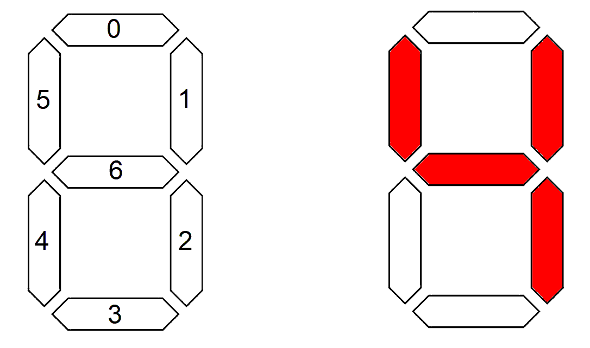
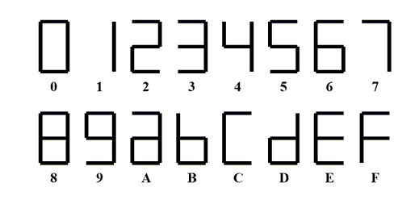

| Lecture | 2 |
| Code | majority.vhdl
|
| Class Objectives | TT to VHDL, STD_LOGIC_VECTOR, Literals, when/else statement
|
VHDL
Your personality can be expressed through the code that you write. In
lecture 1 we examined a structural method of describing a circuit; we
transformed the circuit diagram into a textual description. Today we
will examine another method of VHDL coding; behavioral.
Behavioral
A behavioral description of a component describes what the circuit
does rather than how it is done. One way to do this is to encode the
truth table for a circuit directly into VHDL code. You can do this
by assigning the output signal a value using the
when/else
structure. The idea is that you assign the output signal a value
when the input signals have a specific value. Since the input
signals can be arranged in variety of ways, you may need to use the
else clause to specify a different output value associated
with a different input signal.
Let's look at a familiar example to see how this works, the 3-input
majority circuit from lecture 1. Remember that this circuit outputs
1 when a majority of the three inputs are 1. In other words, when
2 or 3 of the inputs bits are 1, the output equals 1, else the output
equals 0. The truth table for this circuit if given below.
a b c | f
------|--
0 0 0 | 0
0 0 1 | 0
0 1 0 | 0
0 1 1 | 1
1 0 0 | 0
1 0 1 | 1
1 1 0 | 1
1 1 1 | 1
The code snippet below uses this truth table to assign the output
f a value using the multi-line
when/else statement. I
purposely structured this statement in the same row-order as the
truth table.
The first line of the
when/else statement corresponds to
the input a,b,c = 0,0,0. The last line of the
when/else
statement corresponds to the input a,b,c =1,1,1 because it was
the only input combination not enumerated in the preceding
7-lines.
The last line of a when/else should never
be accompanied with a when statement . The reasons
is because std_logic contains values beyond just 0 and 1 and
as a consequence the last line of the
when/else catches
all these combinations of bit values not covered in the
preceding when clauses. Notice that we
need to put single quotes around the values of '0' and '1'.
We'll come back to this.
------------------------------------------
-- Author: Chris Coulston
-- Date: Fall 2023
-- Purp: Behavior Majority circuit
------------------------------------------
library IEEE;
use IEEE.std_logic_1164.all;
entity majority is
port( a, b, c : in std_logic;
f : out std_logic);
end majority;
architecture behavior of majority is
begin
f <= '0' when a='0' and b='0' and c='0' else
'0' when a='0' and b='0' and c='1' else
'0' when a='0' and b='1' and c='0' else
'1' when a='0' and b='1' and c='1' else
'0' when a='1' and b='0' and c='0' else
'1' when a='1' and b='0' and c='1' else
'1' when a='1' and b='1' and c='0' else
'1';
end behavior;
The
when/else statement in the architecture acts as a
single concurrent signal assignment statements. Thus,
this CSA acts in parallel with any other statements that might
be in the architecture.
Now let's return to the discussion surrounding the single
quotes around literals.
Literals
A literal are fixed values that cannot be modified. Things
like number or ASCII strings are common examples that you
may have seen in previous courses. In VHDL single bits
are surrounded with single quotes symbol ' and groups of
bits are surrounded with the double quotes symbol ". You
can specify a radix for a group of bits in front.
'0' -- constant represents a single logic 0 bit
"1010" -- constant represents four bits, default radix is binary
x"a" -- constant represents for bits in hexadecimal
Vectors
So far, we have been dealing with individual bits with the
datatype
std_logic. While we could build almost any digital
system with this datatype it would be laborious when we deal with
multi-bit signals like the input and output from an adder circuit.
So the creators of VHDL provide use with a datatype called
std_logic_vector that allows us to manipulate a collection
of signals using a single name, much like an array in a procedural
programming language. When you want to use
std_logic_vector
you will need to
- define the signal using a type declaration
- make a sub-vector of a signal using the downto operator
- concatenate vector using the & operator.
Let's look at a couple of examples to see how they work.
architecture silly of vectorExample is
signal a3: std_logic_vector(2 downto 0);
signal b4: std_logic_vector(3 downto 0);
signal c5: std_logic_vector(4 downto 0);
signal x: std_logic;
begin
a3 <= "101";
x <= a3[2] and '1';
b4 <= a3 & '1';
c5 <= b4[3 downto 2] & a3[1 downto 0];
end silly;
The bits of a
std_logic_vector are given indicies specified
by the bounds specified in parenthesis. We will always specify the
largest bit index first followed by
downto and then the index
0. Thus, the
std_logic_vector a3 is 3-bits wide with its bits
indexed as 2, 1 and 0. Likewise b4 is 4-bits wide and c5 is 5-bits
wide.
You can grab individual or groups of bits from a vector using the
the square bracket operator and listing the bit index or subvector
range inside. If you select an individual bit from a vector, then
you can use this signal just like any
std_logic signal, like
as the input to an AND gate.
You can combine bits using the concatenation operator &. When you
concatenate two signals, the signal on the left becomes the most
significant bits of the result and the right signal forms the least
significant bits of the result.
So what are the resulting values of the signals is the above code
snippet? Try it by yourself first, then look at the HTML source
code for the comment just below for the answers.
Majority Circuit
Let's re-imagine the architecture of the majority circuit from earlier
using vectors. Let's take advantage of the concatenation
operator to make a vector out of the inputs a,b,c. We can do this
by creating a signal in the architecture and assigning it the
concatenation of a,b and c. The
when/else then uses this
vector to streamline the code and make it more readable.
architecture behavior of majority is
signal temp: std_logic_vector(2 downto 0);
begin
temp <= a & b & c;
f <= '0' when temp = "000" else
'0' when temp = "001" else
'0' when temp = "010" else
'1' when temp = "011" else
'0' when temp = "100" else
'1' when temp = "101" else
'1' when temp = "110" else
'1';
end behavior;
Don't cares in when/else statements
You can use don't cares in the when portion of a
when/else
statement to simply the logic and number of lines in the statement.
If a bit of the input can equal 0 or 1 with no change in the output,
you can replace that bit value with a don't care. The symbol for a
don't care is the dash, -.
As an exercise, determine the truth table for the following
when/else
statement. The solutions are viewable in the page source as a comment.
temp <= a & b & c;
f <= '1' when temp = "10-" else
'1' when temp = "-10" else
'0' when temp = "0-1" else
'0' when temp = "00-" else
'1';
Hex to Seven Segment converter
The hexadecimal-to-seven-segment-decoder is a combinational circuit that
converts a 4-bit hexadecimal number to an appropriate code that drives a
7-segment display the corresponding value. Let's assume that the LEDs in
our 7-segment display are active low, meaning that they illuminate when
you send them a logic 0. The following shows the bit index for the
individual segments of the 7-segment display. So in order to produce
an illuminated pattern that looks like the number 4 we would have to
send the 7-segment display the vector "0011001"

Now let's turn to writing the VHDL code for the hex2Seven component.
Let's start with entity and describe the inputs and outputs. The input
is 4-bits so we should make it a
std_logic_vector(3 downto 0).
I'd give the input a name like "hex" and the output "sevenSeg".
We will use an
when/else statement to describe the behavior of the
hex2Seven component. All we really need to know is the bit patterns needed
to correctly illuminate the LEDs for each hex input. To help with this,
I've included the expected output for each hex input.

If you still have your EENG 284 labs lying around, you will be able to look
at the Verilog code for lab #2 to get the bit patterns for each input. I'd
like you to try to write the code yourself using the provided code in this
lecture note as a template. When you are complete, look at the source code
for this web page to find the solution in the comments.